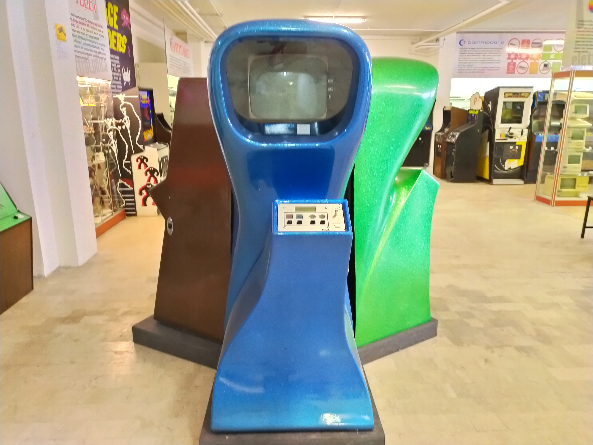
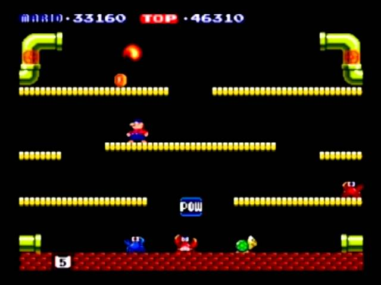

-
1910
-

Primer juego de ajedrez automatizado
El ingeniero español Leonardo Torres Quevedo, diseña un dispositivo mecánico para jugar una partida de ajedrez de rey y torre contra rey, mediante un sistema de electroimanes.
-
1940
-
El primer algoritmo para jugar ajedrez
Alan Turing concibe el primer algoritmo para jugar una partida completa de ajedrez , imposible de ejecutar debido a las insuficiencias tecnológicas de su época.
-
1950
-
Primer videojuego funcional
John Bennet presenta Nimrod un enorme computador capaz de jugar al nim. Se considera el primer vidoejuego funcional de la historia.
-

Tres en raya
En la universidad de Cambridge, Alexander Douglas recrea en el EDSAC OXO un programa con gráficos en que se podía jugar al tres en rayacombatiendo contra una inteligencia artificial muy primigenia
-

Tennis for Two
William Higginbotham, físico que participó en el desarrollo de la bomba atómica, concibe Tennis for Two, un videojuego de tenis con físicas, antecesor del clásico PONG.
-
1960
-

Spacewar!
Un club de estudiantes del MIT, apasionados por la ciencia ficción y el espacio, crean Spacewar!, precursor del Asteroids de Atari.
Fue considerado el primer juego copiable de la historia, pues fue enviado a través del ARPANet
-
Brown Box: la primera videoconsola doméstica
El inventor germano-estadounidense Ralph Baer considera la idea de desarrollar un dispositivo que, conectado al televisor, permitiese jugar al espectador. Desarrollada en secreto a expensas de la compañía Sanders Associates, cuando fue presentada, recibió una financiación de 2000 dólares
El aparato, que bautizó Brownbox permitía jugar al ping-pong y a un juego de acorralar. Pero la idea fue desechada y no se dio a conocer al mercado
Galaxy Game: la primera máquina arcade
Bill Pits, estudiante de la Universidad de Stanford, fascinado por Spacewar!, pone en marcha una máquina en forma de recreativa, que funcionaba a cambio de monedas. A este nuevo equipo lo llamó Galaxy Game.
-
1970
-
El nacimiento de Atari
Otro estudiante, de la Universidad de Utah, quedó fascinado por Spacewar. Nolan Brushnell , al igual que Bill, tenía la intención de incursionar en los salones recreativos con esta tecnología. Para este objeto, se fundó la compañía Atari.
-

Computer Space
Con unos componentes diseñados ex profeso para la ejecución de un único programa y así abaratar los costes de producción, Atari saca al mercado Computer Space , la primera recreativa de la historia que podía fabricarse en una línea de producción.
Magnavox Odyssey: la primera videoconsola doméstica comercializada
Ralph Baer no desistió en la idea de la videoconsola doméstica y trata por todos los medios vender el producto a alguna compañía interesada. Consigue convencer a la empresa Sanders Associates.
La concepción de la industria: PONG
Nolan Brushnell tiene la oportunidad de jugar al ping-pong de la Magnabox Oddyssey, y contrata a Alan Alcorn para realizar una versión arcade del mismo, a la que llamó PONG, mejorada a la original doméstica.
El mercado de los comienza empieza a instaurarse
El gran éxito de PONG impulsó la creación de una consola doméstica dedicada; ello impulsó a muchas compañías a emprender en el negocio de los videojuegos, creando sus propias consolas clónicas basadas en el mismo videojuego.
Atari 2600
La Atari VCS (2600) significó un punto de inflexión en la industria del videojuego, que incorporaba por primera vez un sistema de cartuchos intercambiables que permitían la adquisición de nuevos juegos. Fue un éxito en ventas.

Taito amenaza la hegemonía de Atari
En Japón, Toshihiro Nishikado al frente de la compañía Taito, decidió apostar por una nueva tecnología de microprocesadores digitales, lo que le permitió crear el mítico juego Space Invaders
-
1980
-
EL éxito de la Atari 2600
El mercado de los videojuegos entra en auge, en cuyo pináculo se encuentra Atari con su Atari 2600, pero también las recreativas de Space Invaders, cuyo furor era mayor, si cabe, por el éxito de las película Star Wars.
-
La irrupción del color
El color del mundo de los videojuegos, inaugurado con Space Invaders , fue seguido de Missile Command , Tempest y Space Duel de Atari. Otras compañías como Namco también desarrollaron Frogger o Centipede .
-
Pac-Man
Pero ninguno de los anteriores pudo superar en éxito a Pac-Man, un videojuego programado por Toru Iwatanari, que se propuso crear un juego de laberintos "libre de violencia"
-

Donkey Kong
Después de muchos fracasos, la compañía Nintendo consigue destacar con su máquina recreativa Donkey Kong presentando a dos icónicos personajes: Mario y Donkey Kong, que se convertirían en una enseña del videojuego.
-

Mario Bros
Después de su éxito con Donkey Kong, Nintendo impulsó su recién creado personaje, Mario, en un nuevo título, el primero en que lo mostró al público como un fontanero.
-
Ordenadores de 8 bits
Comienzan a popularizarse los ordenadores de 8 bits como el ZX Spectrum ,a los que siguieron ordenadores mucho más potentes y variados.
-

Commodore
De entre todos los ordenadores de este tipo, destacan los Commodore al tratarse de un equipos especialmente diseñado para trabajos de diseño, dotado de potencia suficiente como para mostrar gráficos complejos, y por consiguiente, de reproducir videojuegos.
Los videojuegos se introducían en cintas de casete, y había gran variedad de ports.
-
Game and Whatch de Nintendo
Nintendo, que hasta entonces había destacado en la creación de famosos juegos recreativos como Donkey Kong crea una serie de consolas portátiles, las Game and Watch, que permitían jugar videojuegos muy rudimentarios basados en figuras iluminadas.
Pueden considerarse las primeras consolas portátiles que se popularizaron en el mercado.
-
La crisis del videojuego
La revolución de Atari introdujo mucha competencia en el mercado, consolas clónicas y desarrolladores muy incompetentes que inundaron las tiendas con juegos y videoconsolas de muy baja calidad.
Esto provocó el hundimiento de la industria, que detonó en las navidades de 1983, tras el fracaso del juego de ET: El extraterrestre.
-
Nintendo Entertaiment System
En una situación de estancamiento, Nintendo irrumpe en el mercado de las videoconsolas domésticas con su Nintendo Entertaiment System , un sistema que aprovechaba la tecnología de 8 bit cuyos juegos estaban verificados con sellos de calidad Nintendo para ganarse la confianza de los clientes. Empieza la era de Nintendo.
-
Super Mario Bros
En el seno de la Nintendo Entertaiment System , Shigeru Miyamoto desarrolla el videojuego más conocido de la consola y uno de los más comprados del mundo: Super Mario Bros; este título perfila las bases de los juegos de plataformas
-
Sega Master System
La década de los 80 está caracterizada por la dominancia de Nintendo con su NES , sin embargo, subyacente a este éxito, la compañía norteamericana SEGA saca al mercado su Sega Master System, que triunfa relativamente en los Estados Unidos.
-
Videojuegos de rol por ordenador
Al margen de todo el conflicto en el ámbito de la industria de los videojuegos, se crean los primeros juegos de rol para ordenador, que poco a poco van cultivando aficionados a la narrativa que se desarrollaba únicmente por texto.
-
1990
-
Commodore Amiga
La antigua Commodore 64 fue repuesta por la novedosa Commodore Amiga 500 , un portento tecnológico sobresaliente y a muy bajo precio en comparación con sus prestaciones y desempeño gráfico, perfectos tanto para el diseño como para los juegos.
-
Atari ST
Atari había continuado su camino por el lado de la computación, convirtiéndose en competencia directa de Commodore, a quien enfrentó con el Atari ST
-
Sega Megadrive (Genesis)
La Sega Megadrive fue un sistema que se adelantó - por poco - a Nintendo en el lanzamiento, incluía gráficos 16 bits y era significativamente más barata que la competencia. Acabó vendiendo más unidades que su predecesora, la Master System.
-

Sonic the Hedgehog
Fue en este punto cuando SEGA acogió a su mascota, Sonic the Hedgehog, para ser el emblema de la compañía y así luchar en el mercado contra Mario.
Esta decisión fue tomada en vista de la buena recepción que tuvo su videojuego, de hecho, el que más ventas cosecha del catálogo entero de la videoconsola
-

Super Nintendo Entertaiment System
Con un chip gráfico mejorado, promocionándose como una recreativa doméstica, la Super Nintendo Entertaiment System irrumpe en el mercado superando ligeramente en ventas a Sega Megadrive
-

Super Mario Kart
La saga más conocida engendrada por la Super Nintendo fue Super Mario Kart , un nuevo género consistente en carreras de Kart que contaban con objetos con los que contender con los corredores para aventajarse durante las carreras
-
Tetris
Un ingeniero de la Unión Soviética, Alekséi Pázhitnov, desarrolló en un ordenador Electrónika 60 el videojuego Tetris en una sola tarde. Este consiste en unas piezas denominadas tetrominós que descienden; el objetivo del jugdor es liberarlas conformando líneas
Gozó de gran éxito y fue distribuido en diferentes versiones a lo largo y ancho de la Unión Soviética; puesto que en ese país las patentes no estaban al alcance, no pudo beneficiarse de su invento.
-

Game Boy
Es Nintendo quien finalmente consigue apropiarse de la patente del Tetris , título al que la novedosa Game Boy debe parte de su éxito. Fue la primera consola portátil con cartuchos intercambiabes que se hizo popular en el mercado.
Careció de competencia en el mercado.
-
Neo Geo
La Neo Geo fue una videoconsola excesivamente cara, solo al alcance de pocos privilegiados. Su potencia, colosal y superior técnicamente a la del resto de la competencia, permitía transmitir con completa fidedignidad la experiencia de las recreativas en el ámbito doméstico
-
Sega Saturn: Tecnología de 32 Bits
La Saturn contaba con un hardware potente, dos años antes del lanzamiento de su competencia directa, la Play Station de Sony y la Nintendo 64. Por esta causa, no pudo adivinar que el siguiente campo de batalla era tridimensional, por lo que era dificultoso desarrollar videojuegos con modelos 3D para esta consola.
-
Sony Play Station: Videojuegos en CD
Tras fallar una negociación de sinergia con Nintendo, Sony se introduce en el mercado de los videojuegos por su cuenta con la Play Station , implementando la tecnología novedosa del CD, medio que abarató significativamente los costes de producción y aumentó la capacidad de almacenaje de los juegos, facilitando una mejora de los gráficos.
-
Nintendo 64
La Nintendo 64 contaba con, como no podía ser de otra forma, 64 bits. Su tecnología era muy superior a la de sus competidores, pero su retraso y su obstinación con el sistema de cartucho la hicieron menos atractiva que la Sony Playstation
-
Fin